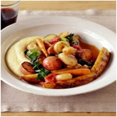

Roasted Vegetable Ragout

Ingredients
1 pound boneless, skinless chicken thighs, cut into 1/2-inch pieces
1 tablespoon plus 2 teaspoons cornstarch
2/3 cup low-sodium chicken stock
1 tablespoon rice vinegar
1 tablespoon brown sugar
1/2 teaspoon garlic chili sauce
1 tablespoon plus 2 teaspoons soy sauce
2 tablespoons vegetable oil, such as safflower
1 leek, halved lengthwise, well-washed and thinly sliced crosswise
1/2 medium jicama (about 6 ounces), peeled, thinly sliced, and cut into matchsticks
1 red bell pepper, ribs and seeds removed, cut into 1/2-inch strips
2 tablespoons minced peeled ginger
3 garlic cloves, minced
3 bunches watercress (about 21 ounces), thick stems trimmed, coarsely chopped
Directions
1. Toss chicken with 1 tablespoon cornstarch.
In a small bowl, whisk together broth, vinegar, sugar, garlic chili sauce, soy sauce, and remaining cornstarch; set aside.
2. In a large nonstick skillet, heat oil over medium-high.
Saute chicken until golden brown and cooked through, 8 to 10 minutes; remove chicken and set aside.
Add leek, jicama, bell pepper, ginger, and garlic; cook, stirring frequently until jicama is crisp-tender, about 3 minutes.
Return chicken to pan along with watercress; cook until watercress has wilted, about 2 minutes.
3. Whisk soy sauce mixture, then add to pan.
Bring to a simmer and cook, stirring constantly until the sauce has thickened, about 1 minute.
Serve immediately.